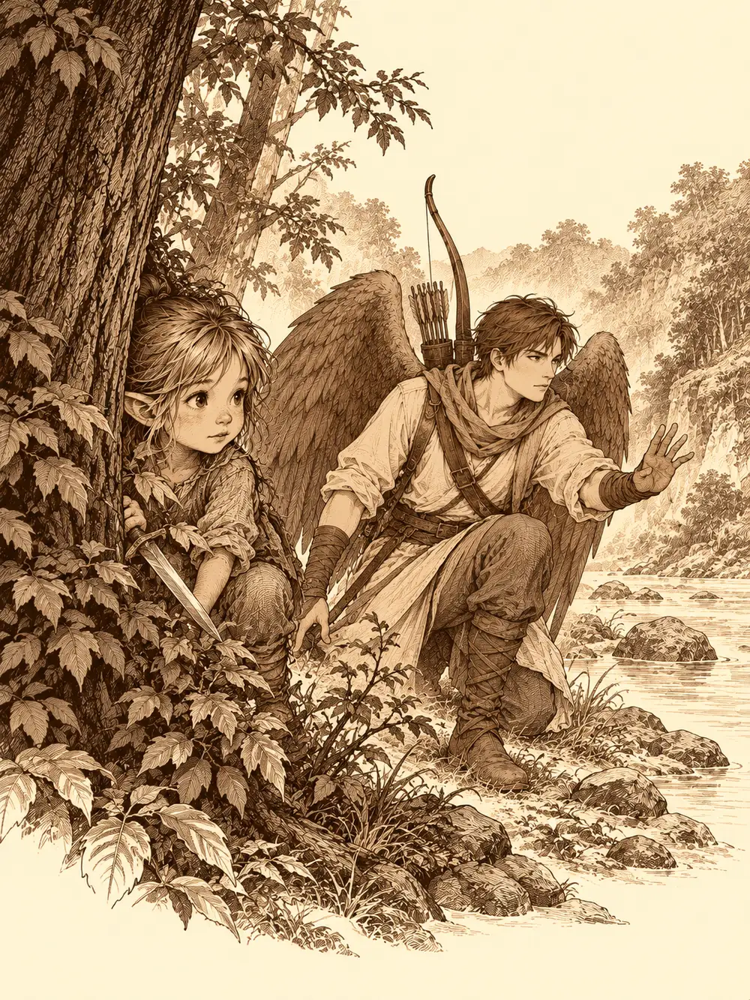

Capítulo 19
Entrenar a mi kender
Libro II · El favor del shogun
La ceniza se había metido en todas partes: en las grietas de las vigas, en las costuras de la ropa, entre los dientes. Llevaban varios días limpiando lo que había dejado el kitsune, y Ukio empezaba a parecerse otra vez a un pueblo. En las afueras, donde los árboles quemados se alzaban negros contra el cielo como dedos de carbón, Hayate y Bill apartaban madera muerta. De vez en cuando el maestro le lanzaba un palo a su alumno sin avisar, para entrenarle los reflejos. Bill los esquivaba y lo miraba sin terminar de entender por qué su maestro le tiraba palos.
Más abajo, donde el fuego había mordido con más ganas, Shiru sustituía los tablones quebradizos de una casa por otros nuevos para que no se viniera abajo. Lo hacía sin camisa, flexionando más de lo necesario cada vez que levantaba una tabla, y mirando de reojo a Zia, que recogía escombros a pocos pasos. Zia lo vio, se dio la vuelta y se rio bajito, sin burla; le hacía gracia.
Jin y Hino Yama limpiaban los restos de los cultivos. Cuando el sol empezó a bajar, todos estaban agotados.
Al pasar por delante de la tienda del alquimista, la puerta se abrió y asomó una cabeza.
"¡Jin! Ven, ven. Tengo lo que me pediste".
Sobre la mesa había una caja azul, no muy grande, con un frío que se notaba a un palmo de distancia. Dentro, explicó el alquimista con orgullo, había un cono de hielo constante. Conservaría la comida durante semanas. Y si algo pequeño se metía dentro, una criatura diminuta, un bicho, el frío la dañaría, la iría helando y al final la dejaría congelada viva hasta que alguien la sacara.
Jin miró la caja y pensó en dos niñas kender muy curiosas.
"¿Cuánto?".
"Cincuenta monedas".
Las pagó. Luego le pidió cadenas, argollas y un buen cierre para que nadie pudiera abrirla sin querer. Shiru se la cargó a la espalda y se la llevó hacia la base.
Haru, esa semana, no tenía nada que repartir. Entre el incendio y el sueño que se había tragado al pueblo, no había podido salir a pescar.
En la taberna, detrás del mostrador, estaba Kitaro.
Había vuelto a tomar el mando. Tenía buen aspecto, dentro de lo que cabía, y los recibió con los brazos abiertos.
"Bienvenidos, amigos míos. Gracias a Jin y a sus compañeros tengo una segunda oportunidad. ¿Y sabéis lo mejor? No tengo hambre. Ni necesito dormir. Puedo estar aquí trabajando día y noche".
Shiro seguía sirviendo a su lado, con las bandejas en equilibrio y la misma reverencia de siempre.
Cuando Shiru volvía a la base para descansar, la puerta se abrió antes de que llegara. Salió Sirth, ojeroso, arrastrando a Shizuka, que le golpeaba las piernas con la espada de madera.
"Iba a buscaros. ¿Os la podéis llevar? Tengo que encargarme del bebé y terminar unos pergaminos, y esta no para de pedirme que le enseñe a pelear. ¿Cómo le voy a enseñar yo? ¿Que rece, y dentro de unos años le saldrán hechizos?".
Shiru se agachó y le susurró a la niña al oído, señalando a Sirth:
"¿Ves a ese? Imagínate que es un árbol".
Al rato estaban todos en la taberna, y Shizuka corría alrededor de la mesa dando estocadas al aire.
"¡Jin! ¡Jin! ¡Mira lo que he aprendido!".
Hino Yama, que no la conocía, se acercó a ella. La niña lo miró de arriba abajo.
"¡Un dragón!".
Él escupió una llamita y ella aplaudió. Luego él le pidió la espada de madera, le pasó la mano por encima y la hoja se encendió.
"Ahora tienes una espada de fuego".
Shizuka corrió a enseñársela a Jin. La madera ardió muy bien. Al poco ya no quedaba espada.
"Ya no tengo espada", dijo, con el labio temblando.
Así empezó la lista. Una espada de madera nueva, reforzada con una chapa en los bordes para que no se rompiera a los tres golpes. Una espada corta de verdad, de metal, que Jin le guardaría hasta que estuviera preparada. Una armadura improvisada que el herrero le ató con cordeles y unos ganchos, un poco grande, de cuero viejo. Hino Yama le dio una poción. Hayate, una red.
"¡Llevadme a cazar!", pedía. "¡Vamos a matar yokai!".
Estaban rendidos. Pero acordaron una cosa: una excursión corta por el bosque, sin buscar presas, solo para que se cansara.
La llevaron cerca del río, a un sitio que conocían de sobra. Shizuka iba agarrada a un ala de Hayate, señalando huellas de yokai que eran ramas y piedras.
Hayate le enseñó a moverse entre las sombras, a buscar siempre un sitio oscuro donde no la vieran. Ella se escondía detrás de los árboles con media cabeza fuera y la punta de la espada brillando entre las hojas, pero lo intentaba.
Jin se quitó la espada corta del cinto y se la tendió.
"Te la doy con tres condiciones. Una: no la uses dentro de casa. Dos: no apuntes a ninguno de nosotros. Tres: cuidado, que pincha y corta. Ataca a ese árbol".
Shizuka corrió con la lengua entre los dientes y dio un tajo que casi derriba el tronco. Se volvió hacia ellos con los ojos como platos.
"¿Lo he hecho bien?".
"Muy bien, para ser tu primera vez".
"¡Shiru! ¡Enséñame algo tú!".
Shiru le explicó cómo saltar: coger carrerilla, flexionar las piernas, empujar el suelo hacia atrás. Saltó el arroyo para demostrarlo. Shizuka cogió carrerilla, saltó y cayó al agua. Shiru la sacó cogiéndola con dos dedos por la armadura.
"No quiero saltar. Quiero saber pelear".
Así que Shiru llamó a Jin, lo agarró del brazo y lo tiró al suelo con una llave. Shizuka se rio. Jin quiso devolvérsela y los dos se enzarzaron en un forcejeo que duró tanto que la niña se aburrió y se fue a buscar a Hino Yama.
"¿Y la magia? ¿Cómo se hace la magia?".
"Hay que estudiar", le dijo él.
Le escribió en un papel un truco sencillo, unas luces que bailaban en el aire, y le prometió que le enseñaría a leerlo más adelante.
Eran casi las ocho cuando oyeron voces en la orilla.
Hayate, que estaba en una rama, fue el primero en verlas. Tres figuras de mujer, sentadas junto al agua, cantando. Iban vestidas como geishas y les sonreían. Se bajaban el kimono por el hombro y les hacían señas para que se acercaran.
Hino Yama y Shiru se fijaron en la piel. Había escamas que relucían a la luz del atardecer. Ellos ya habían visto antes mujeres así, en el burdel y en el puente del río: serpientes con rostro de mujer.

Uno de ellos se subió a Shizuka a la espalda.
"Agárrate fuerte. Y no hagas ruido".
"¿Qué son? ¿Qué son?".
"Nunca te dejes engañar por las apariencias".
No habían atacado. Seguían cantando. Shiru bajó la cabeza y cargó contra la primera con los cuernos por delante.
Las tres chillaron, y el chillido les desencajó la cara. Los cuerpos se estiraron y se cubrieron de escamas, y las piernas se les fundieron en colas largas de serpiente.
"¡Escóndete!", le gritaron a Shizuka.
La niña saltó al suelo, sacó la espada corta y corrió hacia los arbustos. Se agazapó detrás de unas ramas, pero se le veía media cabeza y la espada brillaba entre las hojas.
Hino Yama les lanzó una bola de fuego que estalló sobre el agua. Hayate disparó desde los árboles, y una de sus flechas dejó a una serpiente atrapada en el sitio. Jin combatía con la espada. Una de las colas se enroscó a las piernas de Shiru y la serpiente le hundió los colmillos en el hombro, y luego otra vez; con cada mordisco parecía recobrar fuerzas. Shiru no intentó soltarse. La golpeó con el escudo una vez, y otra, hasta apartarla. Las tres cayeron.
"¡Qué chulo!", gritaba Shizuka saliendo de su escondite. "¡Has tirado el escudo! ¡Y el otro con la espada de fuego!". Corrió hacia Hino Yama. "¡Ponme la espada de fuego!".
"Hoy no".
Le encendió un palo y se lo dio, y ella echó a correr con su antorcha. Shiru, mientras, empezó a amontonar a las serpientes muertas y alguien propuso asarlas. Discutían si aquella carne se podía comer cuando oyeron una risa grave a sus espaldas, y un sonido ahogado, como de alguien a quien le tapan la boca.
Detrás de ellos había una criatura enorme, de piel azul, con tatuajes en el pecho y una capucha echada sobre la cabeza. Tenía unas zarpas como palas y llevaba una guadaña de hoja larga, adornada, que brillaba en la penumbra. Con la otra mano sostenía a Shizuka por la cara, a la altura de su pecho. La mano le tapaba la boca y casi toda la cabeza. La niña pataleaba en el aire.
"Así que vosotros sois los cazadores".
Hino Yama no esperó. Levantó la mano y tres saetas de luz salieron disparadas y se clavaron en los dedos del oni. La criatura gruñó y abrió la mano. Shizuka cayó al suelo, se levantó con la espada en la mano y corrió temblando hacia los árboles.
"Acabaré con vosotros", dijo el oni. "Y hablaré con vuestros cuerpos".
Hayate le disparó y la flecha lo frenó; se movía más despacio, como si le pesaran las piernas. Pero la piel del oni empezó a brillar y las heridas se le fueron cerrando. Se agachó, clavó las zarpas en el suelo y de allí empezó a levantarse una cúpula de oscuridad que se los tragó a todos.
No se veía nada. Hino Yama le lanzó su botella de sake y le prendió fuego, y por un instante la silueta del oni se dibujó en llamas en la negrura. Shiru golpeó hacia donde había visto el destello y empujó a la criatura, que quedó con medio cuerpo fuera de la oscuridad.
En la negrura, algo golpeó a Hayate en el ala. Era Shizuka, con su espada de madera, que no veía nada y pegaba a lo que tenía delante. Hayate la apartó de un empujón suave, la sacó de la cúpula y la llevó hasta un árbol.
Jin, por fin, acertó un golpe que rompió la concentración del oni. La oscuridad se deshizo como humo.
Hino Yama se puso delante de la niña.
"Escóndete".
"¡Quiero luchar!".
"No es el momento. Alguien tiene que quedar con vida para avisar al pueblo".
Shizuka se fue a esconder, enfurruñada.
Hayate disparó una flecha que entró en el cuello del oni. La criatura tosió sangre. Se arrancó la flecha.
"Malditos cazadores. Mi señor vendrá pronto y acabará con vosotros y con toda esta isla".
"¿Quién es tu señor? ¿Y por qué querías secuestrar a una niña?".
"No quería secuestrarla. Solo quería que me prestaseis atención". Volvió a escupir sangre y se rio. "Mi señor Otakemaru vendrá de las tierras del sur. Acabará con Kuroto, tarde o temprano".
Levantó la guadaña. Shiru saltó contra él y falló. Jin se plantó delante.
"Me entrenaron para matar bestias como tú".
Le cortó la cabeza. Rodó por la hierba hasta los pies de Jin, con la cara hacia arriba.
"Mi señor Otakemaru", dijo la boca, y no dijo nada más.
Conocían el nombre. Nunca habían visto a Otakemaru, pero habían oído hablar de él en sus años por Kuroto: un yokai tan poderoso que muchos otros yokai lo veneraban como a un dios.
En las ropas del oni encontraron treinta monedas y las repartieron; dos fueron para Shizuka. Shiru levantó la guadaña, que nadie más podía cargar, y metieron la cabeza en una bolsa. Hino Yama le perforó los ojos, por si acaso su señor podía ver a través de ellos.
Volvieron con la niña a la espalda. Por el camino le preguntaron qué había aprendido.
"A esconderme. A alejarme del malo. Y que si me pegan me bebo esto". Les enseñó la poción.
"Y si ves a un enemigo", le dijo alguien, "corre".
En la esquina de la base apareció Sirth, mirando a todas partes.
"¿Dónde estabais?".
Alguien le contó lo del oni, lo de Otakemaru, lo de la mano sobre la cara de la niña. Sirth se quedó blanco. Agarró a Shizuka, la giró, le revisó los brazos, el cuello, la cara.
"¿Estás bien? ¿Te han hecho algo?". Vio la armadura, la espada. "Y encima le habéis comprado armas".
Cuando comprobó que estaba ilesa, se le fue calmando el pulso. Entonces les contó lo que sabía.
Hacía mucho tiempo los yokai dominaban Kuroto. Después llegaron las otras razas, desembarcaron, levantaron ciudades, y los yokai fueron perdiendo terreno. Hubo una guerra entre Otakemaru y la gente de los pueblos, con muchas bajas en los dos bandos, y al final lo expulsaron hacia el sur, más allá de unas montañas que hacían de muralla, en el límite de las tierras colonizadas. Unas montañas lejos de Ukio y mucho más cerca de Sho.
"No estamos preparados para enfrentarnos a eso. En mucho tiempo".
Muy al sur, detrás de esas montañas, la tierra era árida y estaba medio quemada, sin apenas bosque. Entre las rocas se movía una silueta imponente, y en la oscuridad brillaban dos ojos rojos.